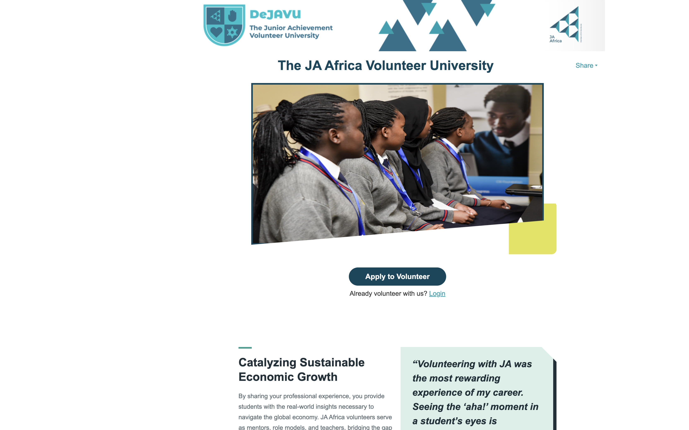
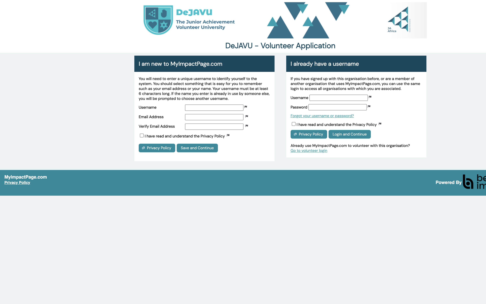
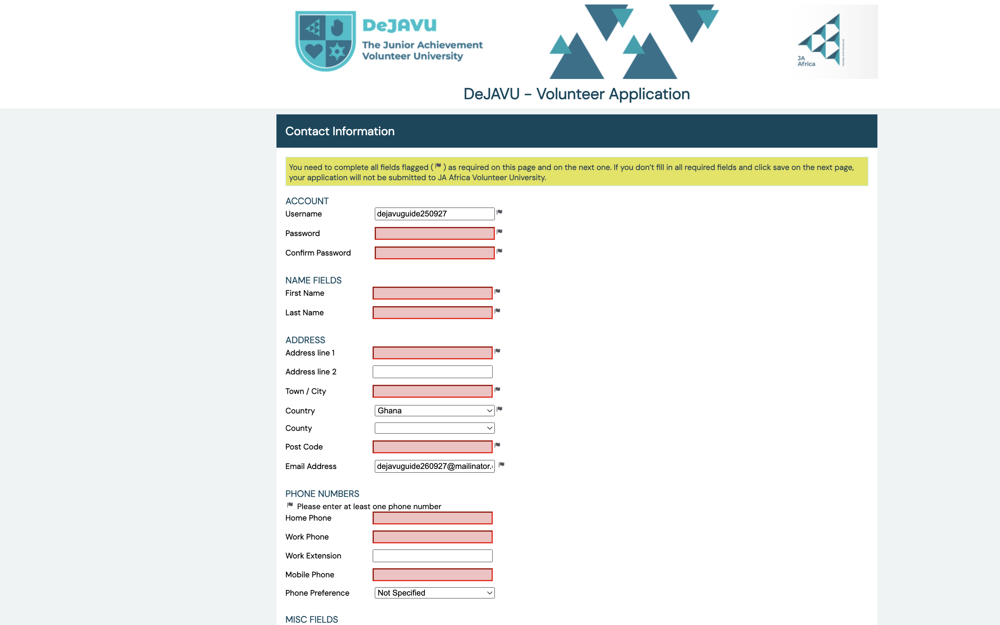
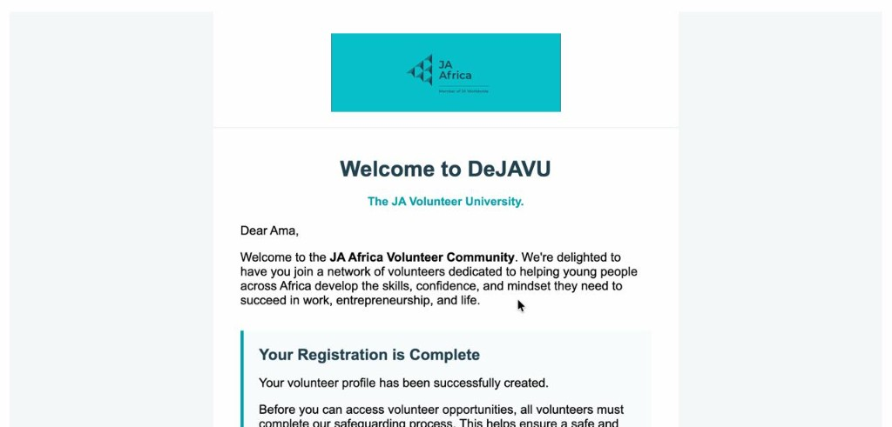
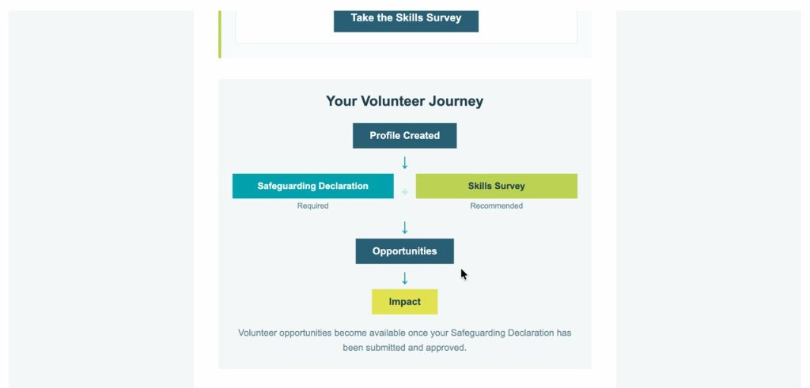

Volunteer guide
Audience · New volunteerSet Up a Volunteer Account
Create your DeJAVU account on Better Impact so you can apply to volunteer with JA Africa Volunteer University.
Start here: volunteers.ja-africa.org
Open the DeJAVU homepage
In your browser, go to volunteers.ja-africa.org. This is the public page for The JA Africa Volunteer University.

Apply to VolunteerClick Apply to Volunteer
Click the Apply to Volunteer button in the middle of the page. This opens the DeJAVU volunteer application.
Already have an account? Use the Login link under the button instead. See the Better Impact guide on logging on to your profile.
Create a new account
If you have never used MyImpactPage.com before, use the left column: I am new to MyImpactPage.com.
Fill in every field marked with the flag icon. Those fields are required.
- Choose a unique username (at least 6 characters).
- Enter your email address, then enter it again to verify.
- Tick I have read and understand the Privacy Policy.
Then click Save and Continue.

New users — fill this side Existing users login hereIf you already have a MyImpactPage.com username from another organisation, use the right column instead and click Login and Continue.
Fill out your contact information
On the Contact Information page, complete all fields with the flag icon. Required fields are marked with that flag.
You will need to:
- Create a password and confirm it.
- Enter your first name and last name.
- Enter your address, town/city, country, and post code.
- Enter at least one phone number (home, work, or mobile).
When everything required is filled in, click Save and Continue.

Flag = required fieldYou only need one phone number, even though the form shows several phone fields.
Application complete — welcome to DeJAVU
When your account is created, you will see an Application Complete page that says Welcome to DeJAVU.
 Complete Safeguarding
Complete Skills Survey
Complete Safeguarding
Complete Skills Survey
You must complete the mandatory Safeguarding Check before you can access volunteer opportunities. You can also complete the Skills Survey from this page.
Check your welcome email
DeJAVU also sends a welcome email to the address you used when you signed up. Open it to confirm your registration and see what to do next.

The email explains your volunteer journey: create your profile, complete the Safeguarding Declaration (required) and the Skills Survey (recommended), then access opportunities and start making impact.

Required RecommendedVolunteer opportunities become available once your Safeguarding Declaration has been submitted and approved.
Log in later
When you need to return, go to volunteers.ja-africa.org and click Login, or open MyImpactPage.com and sign in with your username and password.
New volunteer opportunities will appear in your account as they become available.